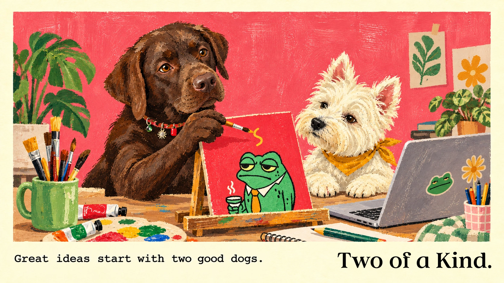

One illustration a day. When its day is over, it moves to the archive, never before.
Made by Fabio Petriccione, with AI, inspired by mochadott.

One illustration a day. When its day is over, it moves to the archive, never before.
Made by Fabio Petriccione, with AI, inspired by mochadott.
Preview: made-up history